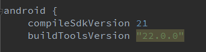

android studio compile fail to resolve XXX解决办法
今天android studio 升级到了1.2版的Beta3，新建了一个项目想测试一下fresco库，结果出现了如题所说的问题，编译的时候编不过。很奇怪的是在公司测试的时候明明没有问题的，后来提示让我装24.0.1的build tool 的更新，果断更新，重新编译依然不可以，于是重新新建了一个新项目加入了fresco库，编译，在新项目里是ok的，原来原来项目里面使用的依然是新建项目时的build tool工具，即使你更新工具了，build.gradle里面还是使用的原来的build tool工具，于是将原来项目里build.gradle换为新的22.0.1的build tool ,果断ok了。
在as 1.2的Beta3版本里面使用buildTool 22.0.0会导致编译外部dependency 时can not resolve错误，要下载最新的build tool 工具，将此处改为22.0.1，就ok了。
个人猜测是不同版本的android studio版本对应使用不同版本的build 工具，虽然有时不匹配也能编译过，但最好还是使用匹配的，也或许是应该是最好使用最新的build tool工具。